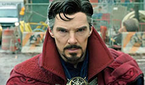
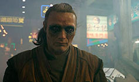
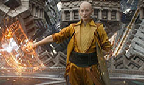
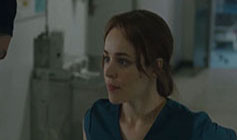

Personajes
Acá vas a poder encontrar a los personajes principales...
y lo que queres saber de ellos!
   
El Doctor Stephen Vincent Strange es un poderoso hechicero y miembro destacado de los Maestros de las Artes Místicas. Era un neurocirujano exitoso hasta que un accidente automovilístico dañó gravemente sus manos, lo que le hizo iniciar un viaje que lo llevó a Kamar-Taj, donde al descubrir la magia y las dimensiones alternativas, fue entrenado por Ancestral.
Kaecilius es un hechicero y ex miembro de los Maestros de las Artes Místicas que se desilusionó con el Anciano cuando sintió que su mentor no permitía que otras dimensiones vinieran a la Tierra , que creía que podrían reunirlo con su esposa e hijo fallecidos.
La Ancestral fue la Hechicera Suprema y líder de los Maestros de las Artes Místicas. Por muchos siglos, protegió la Tierra de las amenazas místicas y se dedicó a ayudar a otros necesitados educándolos en las artes de la magia para darles una nueva esperanza.
La Doctora Christine Palmer es una cirujana y antigua colega de Stephen Strange. Ella y Strange tuvieron una relación que terminó a causa del ego de éste último, pero siguieron siendo amigos. Luego de que Strange tuviera un grave accidente automovilístico, Palmer trató de ayudarlo, sin embargo, él la alejó creyendo que solo lo cuidaba por lástima.